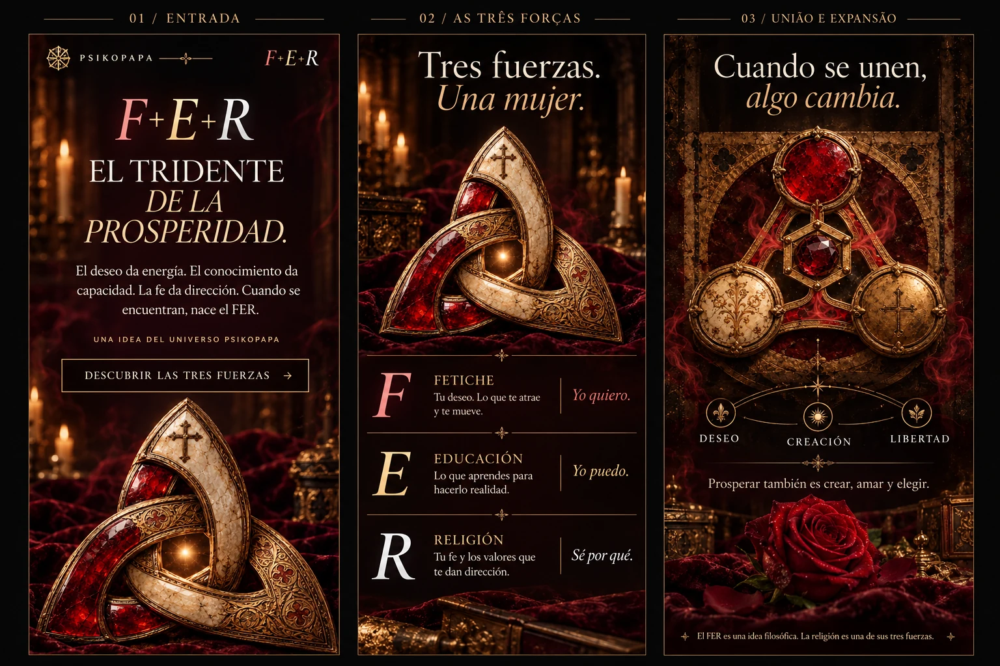

A direção antes da implementação.

Mockups visuais criados antes da alteração. Abrir a imagem permite ver os detalhes.
O coração da rosa. O núcleo do Tridente.

Na página aplicada, F, E e R convergem para «Prosperidad» no coração da flor. O fumo e os reflexos animam a peça; o desejo conduz à criação e à liberdade, e volta a começar.
VER A ROSA ANIMADA NA PÁGINA ↗